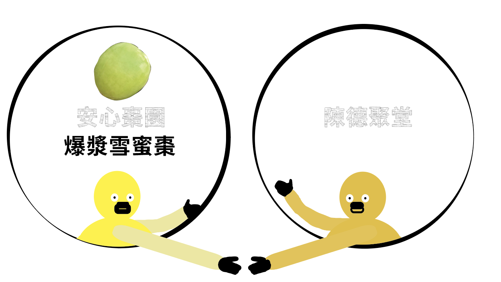

前往➜
「安心棗園」，與家人經營20多年的果園，二代間秉持著讓大家能夠吃得安心的理念，十幾年來沒噴灑過一滴除草劑，所以每棵棗樹都是「老老欉」，且優先選用較無毒的栽培管理方式！
農場致力於提供安全、無毒的產品。他們在採收時做到幾乎零農藥檢出，並選用無毒的資材，如甲殼素和柑橘精油類，以取代農藥。此外，還特地尋找多種有機肥料，並自行混合，再加入益生菌進行發酵，製成了含有益生菌的肥料。在2024年，安心棗園拿到了全臺灣唯二的升級版的產銷履歷證書，通過了400多項的農藥檢驗，幾乎做到接近農藥零檢出。
「食農教育」是我們品牌未來的走向。希望未來能整合盤點手上現有的資源，讓食與農能夠以寓教於樂的方式，帶給更多的孩子與民眾有趣的體驗，從而了解食物生產從無到有的過程，更能清楚知道環境與資源的永續循環利用。
✧地點：楠西區鹿田里鹿陶洋1-16號
✧電話： 0934 474 191
✧開放時間：無店面，拜訪前FB聯繫
食農教育包含了農業、飲食和環境教育三大面向。期許未來能與台南市楠西區的在地青農、相關店家與公部門，協力合作推出更多「食農教育」的活動。藉由園主的導覽解說及示範，全家大小一起親手體驗採果的樂趣，品嚐到最新鮮的原味。還能享用園區結合當季水果的特色美食、體驗有趣的DIY體驗活動，順便採購。
前往➜